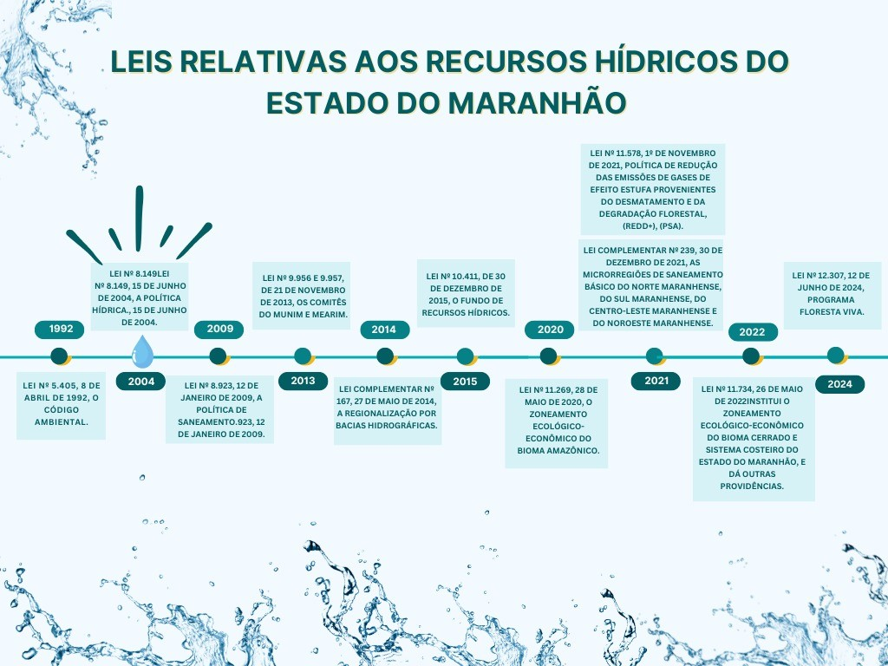

Reflexões sobre a participação social para a implementação da Política Estadual de Recursos Hídricos no Maranhão, pré Amazônia brasileira
1 Universidade Estadual do Maranhão/Superitendente de gestão ambiental; Professora Mestrado Profissional Profágua – andreaaraujo@professor.uema.br
RESUMO
A Lei nº 9.433, de 8 de janeiro de 1997, institui a Política Nacional de Recursos Hídricos no Brasil e estabelece o Sistema Nacional de Gerenciamento de Recursos Hídricos. O presente estudo teve como objetivo fornecer informações atualizadas sobre a implementação dessa política, assim como a articulação dos atores sociais e usuários das bacias hidrográficas no estado do Maranhão para sua efetivação. Para tanto, foi realizada uma pesquisa multidisciplinar de caráter exploratório, utilizando o método dedutivo e observações qualitativas. A partir do referencial teórico, foram analisados dados secundários sobre o ativismo relacionado à água no Maranhão, coletados em fontes como a Agência Nacional de Águas (ANA), a Secretaria de Estado de Meio Ambiente e Recursos Naturais, e bases de dados como o Google Acadêmico.Os dados obtidos permitiram a construção de uma linha do tempo sobre o avanço da legislação estadual, além do levantamento de iniciativas que mobilizam a sociedade com o intuito de fortalecer a discussão transversal sobre a temática, visando ao fortalecimento das políticas públicas no estado. A transversalidade dessa questão, presente em todas as esferas de políticas públicas, evidencia sua relevância estratégica. Assim, é fundamental que todos nós, enquanto usuários da água, atuemos de forma articulada para garantir a efetividade das ações no cotidiano das comunidades.
Palavras-chave: participação social; gestão dos recursos hídricos; Maranhão.
ABSTRACT
Law No. 9,433, of January 8, 1997, establishes the National Water Resources Policy in Brazil and creates the National Water Resources Management System. This study aimed to provide updated information on the implementation of this policy, as well as the coordination of social actors and users of the hydrographic basins in the state of Maranhão for its effectiveness. To achieve this, a multidisciplinary exploratory research was conducted, using the deductive method and qualitative observations. Based on the theoretical framework, secondary data on water-related activism in Maranhão were analyzed, collected from sources such as the National Water Agency (ANA), the State Secretariat for the Environment and Natural Resources, and databases like Google Scholar. The data obtained allowed the construction of a timeline on the advancement of state legislation, as well as the identification of initiatives that mobilize society to enhance the cross-sectional discussion of the topic, aiming at strengthening public policies in the state. The cross-cutting nature of this issue, present in all spheres of public policy, highlights its strategic relevance. Therefore, it is essential that all of us, as water users, act in coordination to ensure the effectiveness of actions in the daily lives of communities.
Keywords: social participation; water resources management; Maranhão.
Introdução
A Política Nacional de Recursos Hídricos do Brasil - PNRH e a importância da participação social
A Lei nº 9.433, de 8 de janeiro de 1997, que institui a Política Nacional de Recursos Hídricos, cria o Sistema Nacional de Gerenciamento de Recursos Hídricos, regulamenta o inciso XIX do art. 21 da Constituição Federal, e altera o art. 1º da Lei nº 8.001, de 13 de março de 1990, que por sua vez modificou a Lei nº 7.990, de 28 de dezembro de 1989, possui um caráter estratégico para o Brasil (Brasil, 1997). Seus princípios fundamentais incluem: a água como um bem de domínio público; a água como um recurso natural limitado, com valor econômico; em situações de escassez, o uso prioritário dos recursos hídricos deve ser destinado ao consumo humano e à dessedentação de animais; a gestão dos recursos hídricos deve garantir o uso múltiplo das águas; a bacia hidrográfica é a unidade territorial adequada para a implementação da Política Nacional de Recursos Hídricos e a atuação do Sistema Nacional de Gerenciamento de Recursos Hídricos; a gestão dos recursos hídricos deve ser descentralizada e contar com a participação do Poder Público, dos usuários e das comunidades (Aith, Rothbarth, 2015).
Observa-se claramente o caráter inovador da Lei nº 9.433/97 à época de sua promulgação, especialmente no que se refere à participação social. A Política Nacional de Recursos Hídricos é um exemplo de política pública concebida com a previsão de ampliação da participação social, tendo como um de seus pilares a gestão descentralizada, participativa e integrada dos recursos hídricos. A lei estabelece que a unidade de gestão territorial é a bacia hidrográfica, sendo criados, para sua administração, os comitês de bacia e as agências de águas. Reconhece-se, no entanto, que há inúmeros desafios para a gestão desse território, dado que os recursos hídricos não respeitam os limites territoriais políticos e exigem uma gestão compartilhada com a administração pública, órgãos de saneamento, e instituições ligadas às atividades agrícolas, industriais, entre outros (Fernandes, 2019).
A Agência Nacional de Águas (ANA) define o Comitê de Bacia Hidrográfica (CBH) como um fórum onde um grupo de pessoas se reúne para discutir um interesse comum: o uso da água na bacia hidrográfica (ANA, 2011). Nesse sentido, os comitês de bacias desempenham um papel fundamental na articulação entre os usuários, na construção de consensos e na definição de um conjunto de regras para a melhor alocação da água, o que constitui a essência do sistema de gestão de recursos hídricos (Brito, 2019). Entre as atribuições dos comitês de bacias hidrográficas, destacam-se a promoção do debate, a mediação de conflitos, a aprovação dos planos de recursos hídricos das bacias e a discussão sobre a implementação dos instrumentos de gestão (Gusmão; Pavão, 2019). Com base nessas considerações, este estudo teve como objetivo fornecer informações atualizadas sobre a implementação e articulação dos atores sociais, usuários das bacias hidrográficas do Maranhão, visando à efetivação dessas ações.
Material e Métodos
Realizou-se uma pesquisa multidisciplinar de caráter exploratório, utilizando o método dedutivo e observações qualitativas. Com base no referencial teórico, foram analisados dados secundários sobre o ativismo relacionado à água no estado do Maranhão. Os dados foram obtidos a partir dos sites da Agência Nacional de Águas (ANA), da Secretaria de Estado de Meio Ambiente e Recursos Naturais, bem como de bases de dados, como o Google Acadêmico. Em síntese, os procedimentos de pesquisa seguiram os seguintes passos: 1 – Levantamento documental e bibliográfico, com enfoque no referencial teórico dos instrumentos da Política Nacional de Recursos Hídricos (PNRH) e na Lei nº 9.433/97 (Brasil, 1997); 2 – Análise de conteúdo, com a elaboração de estruturas conceituais; 3 – Levantamento de dados e informações, utilizando observação qualitativa comparativa.
Resultados e Discussão
Contexto jurídico nacional
A Constituição Federal é a lei suprema de um Estado, reunindo o conjunto de normas e princípios que definem a forma de governo, a organização dos poderes públicos, a distribuição de competências, e os direitos e deveres tanto do Estado quanto dos cidadãos. A Constituição de 1988 estabeleceu as principais diretrizes para a gestão das águas e do meio ambiente. Inovou ao dedicar um capítulo específico ao meio ambiente, representado pelo artigo 225. Esse artigo consagra o princípio do meio ambiente ecologicamente equilibrado, impondo a todos — Estado e sociedade — o dever de preservar o patrimônio ambiental e assegurando o direito a um ambiente saudável. Tal princípio emerge como corolário do direito à vida e à dignidade humana. O artigo 225 atribuiu ao Poder Público uma série de obrigações diretamente relacionadas à gestão das águas (ANA, 2020).
A Constituição Federal estabelece, ainda, os princípios fundamentais que devem orientar tanto o uso dos recursos naturais quanto sua proteção. No caput do artigo, é definida a responsabilidade e o dever do Poder Público em preservar e defender o meio ambiente. Nesse contexto, a Constituição acolheu importantes diplomas legais que abordam questões ambientais, entre os quais se destaca a Lei nº 6.938/81 (Brasil, 1981). Além disso, o legislador criou a competência legislativa concorrente, permitindo que não apenas a União, mas também os Estados e Municípios legislem sobre matéria ambiental, visando ampliar a efetividade da proteção, especialmente no que tange à apuração das responsabilidades por danos ambientais e à punição dos infratores (Lima, 2016).
Uma das consequências dessa mudança de paradigma é a atribuição à União e aos Estados do domínio sobre rios e lagos internacionais ou que cruzem mais de um Estado, bem como o domínio sobre águas superficiais ou subterrâneas, fluentes, emergentes ou em depósito, exceto aquelas pertencentes a obras da União. Assim, impôs-se uma nova classificação dos recursos hídricos, eliminando as águas em regime privado e o domínio dos municípios (Brasil et al., 2017).
O artigo 24 estabelece as normas relativas à competência concorrente entre a União, os Estados, os Municípios e o Distrito Federal. O objetivo desse tipo de competência é promover uma repartição vertical na atividade legislativa (Bim, 2015). A competência da União está restrita à elaboração de normas gerais, enquanto aos Estados e ao Distrito Federal cabe especificá-las por meio de leis que considerem suas particularidades locais. Em relação à competência concorrente, os Estados possuem competência complementar, ou seja, podem detalhar uma lei federal que já existe (art. 24, § 1º). Assim, a União limita-se à edição de leis gerais, não podendo incluir detalhes que são prerrogativa de cada Estado e do Distrito Federal (Perman, 2020).
Adicionalmente, a inércia da União em editar as normas gerais gera a competência suplementar dos Estados (art. 24, § 2º e § 3º), que terão, de forma temporária (enquanto não for editada a lei federal geral), competência plena para elaborar normas gerais e específicas (ANA, 2020).
O Conselho Nacional de Recursos Hídricos (CNRH) e o Sistema Nacional de Gerenciamento de Recursos Hídricos (SINGREH) possuem caráter normativo e deliberativo. De acordo com a legislação, suas atribuições incluem promover a articulação do planejamento de recursos hídricos em nível nacional com os planejamentos regionais, estaduais e dos setores usuários. Além disso, cabe a eles analisar propostas de alteração da legislação pertinente aos recursos hídricos e à Política Nacional de Recursos Hídricos, estabelecendo diretrizes complementares para a implementação dessa política e para a aplicação dos instrumentos de atuação do Sistema Nacional de Gerenciamento de Recursos Hídricos (Barbosa, 2019).
O exercício cidadão na conservação dos recursos hídricos
Atualmente, a cidadania se manifesta na participação da sociedade no Estado, com o objetivo de efetivar uma verdadeira democracia. A democracia participativa, segundo Carvalho (2008, p. 653), “deve ser valorizada não como substitutiva da democracia indireta ou representativa, mas como uma técnica capaz de corrigir os excessos e as insuficiências da representação política”. Para preservar os corpos hídricos e garantir o acesso a esses recursos, o Brasil deve promover uma gestão eficiente, que busque a homogeneização inter-regional e intertemporal da água. É fundamental conhecer as necessidades dos diversos usuários, bem como a capacidade de oferta e de renovação das fontes naturais, a fim de estabelecer os principais marcos regulatórios e a capacidade de suporte de cada bacia (Brasil et al., 2017).
A gestão dos recursos hídricos, caracterizada por ser descentralizada, participativa e orientada para a segurança hídrica e o bem-estar das pessoas e do meio ambiente, representa um desafio complexo. No contexto brasileiro, isso implica lidar com diversas realidades, como regiões áridas densamente povoadas, áreas com alta disponibilidade de água, mas com população dispersa, regiões urbanizadas com elevadas demandas hídricas para usos econômicos e para a população, áreas de conservação, além de sistemas agrícolas intensivos ou familiares, entre outros. Esse cenário envolve múltiplos atores e seus interesses variados, que são representados tanto pelos entes do Sistema Nacional de Gerenciamento de Recursos Hídricos (SINGREH) e seus membros, quanto pela população que é amplamente afetada pelas questões relacionadas aos recursos hídricos (Ferreira, 2023).
No que se refere à gestão descentralizada pelos entes do SINGREH, à implementação dos instrumentos de gestão, ao monitoramento e à regulação, bem como à prevenção de eventos críticos, a Agência Nacional de Águas (ANA) coordena, em parceria com os órgãos gestores estaduais de recursos hídricos, diversas iniciativas (Carreiro, 2017). Entre esses programas, destacam-se o Progestão, o Qualiágua, o Monitor de Secas, o Produtor de Águas, o Profágua e o Profciamb, entre outros, além da implementação das Salas de Situação nos estados e das Salas de Crise e Acompanhamento. Nesse contexto de múltiplas atuações e interesses, a articulação entre os diversos atores do SINGREH é complexa, mas necessária e constante, visando garantir uma gestão integrada efetiva dos recursos hídricos (Bandeira, 2020).
Nesse sentido, a sólida e contínua parceria entre a ANA e os estados, por meio de ações, programas e projetos, é um pilar fundamental e tem se mostrado bem-sucedida ao longo dos anos. Com o intuito de ampliar e aperfeiçoar essas tratativas, a ANA lançou, em 2023, o Pacto pela Governança das Águas, por meio da Resolução ANA nº 153, de 26 de abril de 2023, uma iniciativa significativa para o fortalecimento da integração e da gestão dos recursos hídricos no país. O Pacto representa um compromisso político de alto nível, firmado com a adesão voluntária dos estados, que visa fortalecer a relação institucional entre os entes federativos, aumentando a cooperação para aprimorar a gestão de recursos hídricos, a regulação dos serviços de saneamento e a implementação da política de segurança de barragens (Lima, 2023).
O objetivo do Pacto é consolidar o panorama de iniciativas da ANA com os estados, aperfeiçoando o planejamento, o acompanhamento e o fortalecimento das ações, a partir de um enfoque macroestratégico. Ademais, busca somar e agregar ações relevantes já em curso, como o Programa de Consolidação do Pacto Nacional pela Gestão das Águas (PROGESTÃO), instituído pela ANA em parceria com os estados desde 2013, que abrange um conjunto de ações estratégicas para a gestão e que seguirá para seu terceiro ciclo de vigência. Em 2023, todas as Unidades da Federação assinaram o Termo de Adesão ao Pacto pela Governança das Águas (ANA, 2024).
Situação atual do Estado do Maranhão
Com base nas informações sistematizadas a partir da pesquisa realizada, foi elaborada uma Linha do Tempo referente às Leis relacionadas aos recursos hídricos do estado do Maranhão, conforme apresentado na Figura 1.
Figura 1 - Linha do Tempo das Políticas de Recursos Hídricos no Estado do Maranhão.

Fonte: Autoria própria.
Ao analisar a Linha do Tempo, constata-se que o estado do Maranhão, apesar de seu significativo potencial hídrico, enfrentou um considerável atraso na promulgação e implantação de uma política de gestão hídrica. A Lei estadual de recursos hídricos foi estabelecida apenas em 2004, enquanto a Lei das Águas foi promulgada em 1997, evidenciando uma demora na legislação sobre recursos hídricos sob sua jurisdição. Esse atraso se torna ainda mais evidente ao se comparar com o estado de São Paulo, que promulgou suas legislações hídricas em 1991, antecipando-se às determinações federais, e ainda criou mais de dez Comitês de Bacia Hidrográfica (CBHs) no mesmo ano. Além disso, a questão da implementação da política hídrica no Maranhão é refletida na criação dos Comitês de Bacia Hidrográfica, cuja formação dos primeiros CBHs, como o do Rio Munim e o do Rio Mearim, levou quase uma década para ser concluída, conforme discutido por Brasil et al. ( 2017).
Os primeiros Comitês de Bacia Hidrográfica instituídos no estado do Maranhão foram os dos rios Munim (Lei nº 9.956) e Mearim (Lei nº 9.957), ambos estabelecidos por meio de legislação em 21 de novembro de 2013 (Brasil et al., 2017). Em 2018, o primeiro comitê federal, o Comitê de Bacia Hidrográfica do Parnaíba, foi criado por meio do Decreto nº 9.335 (Bordalo et al., 2018). O ano de 2019 foi marcado pela criação do Fórum Maranhense de Comitês de Bacias Hidrográficas (FMACBH), que tem como objetivo reunir representantes de todos os comitês de bacia pertencentes ao estado, fortalecendo, assim, a gestão participativa por meio dos organismos colegiados (Saldanha, 2024).
Após uma lacuna de oito anos, o ano de 2021 se destacou pelo avanço significativo na instituição de novos comitês de bacia. Um total de cinco novos comitês foram instituídos por meio de decretos governamentais: o Comitê de Bacia Hidrográfica do Preguiças/Periá (Decreto nº 36.577), o Comitê de Bacia Hidrográfica do Turiaçu (Decreto nº 36.578), o Comitê de Bacia Hidrográfica de Balsas e Afluentes Maranhenses do Alto Parnaíba (Decreto nº 36.579), o Comitê de Bacia Hidrográfica do Itapecuru (Decreto nº 36.580) e o Comitê de Bacia Hidrográfica do Pindaré (Decreto nº 36.876). O ano de 2021 também foi marcado pelo fortalecimento dos comitês do Munim e do Mearim, por meio da aquisição de material de informática, administrativo e de toda a mobília necessária para a estruturação de um escritório físico para ambos os comitês (SEMA, 2023).
O escritório do Comitê de Bacia Hidrográfica do Munim está localizado no município de Presidente Juscelino, enquanto o do Comitê de Bacia Hidrográfica do Mearim se encontra na cidade de Pedreiras. Para encerrar o ano, em dezembro, a Secretaria de Estado do Meio Ambiente (SEMA) coordenou o processo eleitoral do Comitê de Bacia Hidrográfica do Munim para o triênio 2022/2025, na cidade de Chapadinha.
Em 2022 a SEMA juntamente com o CONERH e o FMACBH coordenou o processo de mobilização para capacitação e divulgação do dos editais de eleição dos comitês bacias dos rios Turiaçu, Preguiças/Periá, Balsas e Afluentes Maranhenses do Alto Parnaíba, Mearim e Pindaré. Os processos de capacitação e mobilização foram desenvolvidos ao longo dos municípios pertencentes aos territórios de suas respectivas bacias, do alto ao baixo trecho do rio, visando a maior abrangência possível das instituições.
Após o processo de mobilização, foram realizados os processos eleitorais dos Comitês de Bacia Hidrográfica (CBHs) do Mearim, no município de Lima Campos; do Preguiças e Periá, em Barreirinhas; do Pindaré, em Santa Inês; do Turiaçu, em Santa Helena (com participação online); e do Balsas e Afluentes Maranhenses do Alto Parnaíba, também com participação online. Essa etapa concluiu o processo de instalação dos novos CBHs.
Em 2023, a gestão participativa avançou significativamente com a assinatura do Decreto Governamental que instala e empossa os membros eleitos para o triênio 2022/2025 do CBH–Pindaré. Como perspectiva de progresso para este ano, a Superintendência de Recursos Hídricos elaborou os Decretos para os membros eleitos dos CBHs dos rios Preguiças e Periá, do rio Turiaçu e do rio Balsas e Afluentes Maranhenses do Alto Parnaíba, aguardando apenas suas respectivas assinaturas e publicações. Além disso, novas mobilizações para a criação de novos comitês estão sendo planejadas e coordenadas em conjunto com o Fórum Maranhense de Comitês de Bacias Hidrográficas (FMACBH) e o Conselho Estadual de Recursos Hídricos (CONERH). Nesse sentido, as bacias hidrográficas dos municípios de São Luís, São José de Ribamar, Paço do Lumiar e Raposa terão, ainda este ano, a criação de uma comissão pré-comitê, a qual coordenará os trabalhos para a formação do CBH – Ilha de Upaon-Açu.
As bacias do Pericumã, Maracaçumé e Baixo e Médio Parnaíba também serão contempladas com a criação de comissões pré-comitês. Atualmente, o território maranhense conta com oito comitês de bacias hidrográficas, sendo um federal (CBH – Parnaíba) e sete estaduais: CBH – Mearim, CBH – Munim, CBH – Balsas e Afluentes Maranhenses do Alto Parnaíba, CBH – Turiaçu, CBH – Pindaré, CBH – Preguiças e Periá, e CBH – Itapecuru (MARANHÃO, 2023a).
Outro resultado obtido está apresentado no Quadro 01, que mostra iniciativas relacionadas à gestão do tema transversal Água no Maranhão. A partir da pesquisa realizada, foram mapeadas iniciativas de diferentes órgãos e setores da sociedade maranhense.
Quadro 1 - Iniciativas acerca da discussão da Água no Estado do Maranhão.
| Iniciativa | Órgão/Setor | Ano | Fonte |
|---|---|---|---|
| Eixo Água e Energia ligado à Agenda da Administração Pública - A3P | UEMA | 2020 | SUPERINTENDÊNCIA DE GESTÃO AMBIENTAL UEMA - AGA (2020) |
| Evolução da gestão participativa no Estado do MA - Comitês de Bacias | SEMA - MA | 2024 | MARANHÃO (2023a) |
| Assinatura do Pacto pela Governança das Águas | SEMA - MA | 2023 | MARANHÃO (2023b) |
| Ação de consumo consciente de Água | Justiça do Trabalho do MA | 2024 | CONSELHO NACIONAL DE JUSTIÇA - CNJ (2024) |
Fonte: Autoria própria.
O Quadro 01 apresenta o panorama das discussões estratégicas abordadas na pesquisa atual, evidenciando a escassez de iniciativas identificadas nas bases de dados e nos sites oficiais do Maranhão. O manejo e a conservação dos recursos hídricos constituem temas fundamentais para a sustentabilidade ambiental e o desenvolvimento regional. No Estado do Maranhão, embora tenham sido implementadas algumas iniciativas nos últimos anos visando promover a discussão e a gestão da água, ressalta-se a importância da colaboração entre diferentes órgãos e setores da sociedade.
Uma das iniciativas relevantes é o Eixo Água e Energia, vinculado à Agenda da Administração Pública – A3P, promovido pela Universidade Estadual do Maranhão (UEMA) em 2020. Essa ação, conforme relatado pela Superintendência de Gestão Ambiental da UEMA - AGA (2020), visa fomentar práticas de gestão sustentável dos recursos hídricos e energéticos, integrando ações de pesquisa, extensão e ensino. Este eixo busca sensibilizar a comunidade acadêmica e a sociedade em geral sobre a importância da água, estimulando um uso consciente e sustentável (AGA, 2020).
Em 2024, a Secretaria de Estado do Meio Ambiente (SEMA) do Maranhão destacou a Evolução da Gestão Participativa no Estado do Maranhão – Comitês de Bacias. Esta ação enfatiza a criação e o fortalecimento de comitês de bacia hidrográfica, fundamentais para garantir a participação da sociedade na gestão dos recursos hídricos. Como observado em um relatório recente, a gestão participativa tem se mostrado eficaz na promoção do diálogo entre diferentes partes interessadas, contribuindo para a elaboração de políticas mais inclusivas e eficazes (MARANHÃO, 2023a).
Outro marco significativo foi a Assinatura do Pacto pela Governança das Águas, realizada pela SEMA em 2023. Este pacto representa um compromisso entre diversos atores envolvidos na gestão da água, buscando integrar esforços para enfrentar os desafios relacionados ao uso e à conservação dos recursos hídricos. O documento enfatiza a importância da governança colaborativa, onde o diálogo e a cooperação são fundamentais para a construção de soluções sustentáveis (MARANHÃO, 2023b).
Ademais, a Ação de Consumo Consciente de Água, promovida pela Justiça do Trabalho do Maranhão em 2024, ressalta a responsabilidade social na preservação dos recursos hídricos. Segundo o Conselho Nacional de Justiça (CNJ), essa iniciativa visa conscientizar servidores e a comunidade sobre a importância do uso racional da água, promovendo práticas que reduzam o desperdício e incentivem a conservação.
Essas iniciativas destacam um avanço significativo na abordagem da gestão da água no Maranhão, promovendo uma maior conscientização e participação social. A integração entre os diversos órgãos e a sociedade civil é essencial para que as políticas públicas sejam efetivas e sustentáveis, assegurando a proteção dos recursos hídricos para as futuras gerações. Entretanto, a escassez de iniciativas identificadas nas bases de dados e nos sites oficiais do Maranhão evidencia a necessidade premente de um investimento mais substancial em políticas públicas e ações concretas.
A implementação e a expansão da Política Estadual de Recursos Hídricos, aliadas à adoção de práticas sustentáveis em instituições públicas e universidades, têm o potencial de facilitar a discussão e ampliar a interlocução sobre a temática da água. Dessa forma, é possível fortalecer o ativismo e a participação social em relação a essa questão de suma importância para a humanidade. Acredita-se que o fortalecimento da Política Estadual, juntamente com a promoção de práticas sustentáveis, contribuirá para um debate mais amplo e efetivo sobre o uso e a conservação dos recursos hídricos, reafirmando a relevância dessa temática no contexto contemporâneo.
Conclusão
A gestão dos recursos hídricos no Brasil, ao longo dos 25 anos desde a promulgação da Política Nacional de Recursos Hídricos, tem enfrentado inquestionáveis dificuldades. Contudo, apesar do atraso de décadas, acredita-se que houve avanços em níveis federal e estadual, especialmente no Estado do Maranhão, objeto deste estudo.
Os desafios da governança dos recursos hídricos exigem uma gestão mais integrada e participativa, incorporando avanços tecnológicos, sociais, educacionais e de empoderamento, como a modernização e automação de serviços tecnológicos, educação flexível, comunicação da informação em tempo real, e a implementação, disponibilização e integração de bases de dados, entre outros.
A transversalidade desse tema em todas as esferas das políticas públicas evidencia sua relevância estratégica. Cabe a todos nós, como usuários da água, a articulação necessária para garantir a efetividade das ações que não podem mais esperar.
Referências
AGA - Superitendência de gestão ambiental da UEMA. Consumo Sustentável de água e energia em casa.
ANA - Agência Nacional de Águas. Ministério do Meio Ambiente. O comitê de bacia hidrográfica: o que é e o que faz?. Brasília: ANA, 2011.
ANA - AGÊNCIA NACIONAL DE ÁGUAS E SANEAMENTO BÁSICO. Resolução Nº 24, de 04 de maio de 2020. Estabelece procedimentos acerca das atividades de fiscalização do uso de recursos hídricos e da segurança de barragens objeto de outorga em corpos d’água de domínio da União. Brasília, DF: ANA, 2020.
AGÊNCIA NACIONAL DE ÁGUAS E SANEAMENTO BÁSICO (BRASIL). Conjuntura dos recursos hídricos no Brasil 2023: informe anual / Agência Nacional de Águas e Saneamento Básico.- Brasília : ANA, 2024.
ANDRADE, Nailde Martins; SANTOS, Izaías Nascimento dos; MARQUES, Ayub Borges; ALBUQUERQUE, Carlossandro Carvalho de. Governança das águas: o PROGESTÃO no estado do Amazonas (avanços e desafios). CONTRIBUCIONES A LAS CIENCIAS SOCIALES, [S. l.], v. 17, n. 1, p. 620–635, 2024.
AITH, Fernando Mussa Abujamra; ROTHBARTH, Renata. O estatuto jurídico das águas no Brasil. Estudos Avançados, v. 29, n. 84, p. 163-177, 2015.
BANDEIRA, Thiago Oliveira. Desenvolvimento de sistema web aplicado ao acompanhamento sistemático das ações de planos estaduais de recursos hídricos. Doutorado em Tecnologia Ambiental, 2020. Universidade de Ribeirão Preto.
BARBOSA, Flávia Darre. Comitês de Bacias Hidrográficas, representação e participação: desafios e possibilidades à gestão da água e dos recursos hídricos no Brasil. 2019. Tese (Doutorado em Ciências Ambientais) – Centro de Ciências Biológicas e da Saúde, Universidade Federal de São Carlos, São Carlos – SP.
BIM, Eduardo Fortunato; FARIAS, Talden. Competência ambiental legislativa e administrativa. Revista de informação legislativa, v. 52, n. 208, p. 203-245, 2015.
BORDALO, Carlos Alexandre Leão; COSTA, Francisco Émerson Vale; SOMBRA, Daniel; GUEDES, Michel Pacheco. Uma análise da evolução temporal e espacial dos 30 anos de criação dos comitês de Bacias Hidrográficas no Brasil (1988-2018).
BRASIL. Lei 9.433, de 08 de janeiro de 1997, Institui a Política Nacional de Recursos Hídricos, cria o Sistema Nacional de Gerenciamento de Recursos Hídricos, regulamenta o inciso XIX do art. 21 da Constituição Federal, e altera o art. 1º da Lei nº 8.001, de 13 de março de 1990, que modificou a Lei nº 7.990, de 28 de dezembro de 1989. Diário Oficial da República Federativa do Brasil. Brasília, DF, 08 jan. 1997.
BRASIL. Lei n. 6.938, de 31 de agosto de 1981, Dispõe sobre a Política Nacional do Meio Ambiente, seus fins e mecanismos de formulação e aplicação, e dá outras providências. Diário Oficial da República Federativa do Brasil. Brasília, DF, 10 ago. 1934.
BRASIL. Lei n. 9.984 de 17 de julho de 2000, Dispõe sobre a criação da Agência Nacional de Águas - ANA, entidade federal de implementação da Política Nacional de Recursos Hídricos e de coordenação do Sistema Nacional de Gerenciamento de Recursos Hídricos, e dá outras providências. Diário Oficial da República Federativa do Brasil. Brasília, DF, 17 jul. 2000.
BRASIL. Resolução Conama n. 20 de 18 de junho de 1986 que dispõe: O CONSELHO NACIONAL DO MEIO AMBIENTE - CONAMA, no uso das atribuições que lhe confere o art. 7º, inciso lX, do Decreto 88.351, de 1º de junho de 1983, e o que estabelece a RESOLUÇÃO CONAMA Nº 003, de 5 de junho de 1984. Diário Oficial da República Federativa do Brasil. Brasília, DF, 30 jul. 1986.
BRASIL, Gabrielle Vieira da Silva; BEZERRA, Denilson da Silva, JANSEN, Tayssa Rauanny Silva, SILVA, Tatiane de Deus, MENDES, Karina Coqueiro. Análise da evolução legal da proteção dos recursos hídricos no Estado do Maranhão. Revista Uningá, vol. 51 (3), pp.43-47 (jan-mar), 2017.
BRITO, Maria Clara Lucena Dutra de Almeida. A* cobrança pelo uso da água como instrumento de gestão de recursos hídricos*. 2019. 73 f. Dissertação (Programa Stricto Sensu em Direito) - Universidade Católica de Brasília, Brasília, 2019.
BURITI, Catarina de Oliveira; Barbosa, Humberto Alves. Um século de secas: por que as políticas hídricas não transformaram o semiárido brasileiro? Lisboa/Portugal: Editora Chiado, 2018.
BARREIRO, Lorena Mendes. Rede nacional de monitoramento de qualidade das águas (rnqa) como instrumento da política nacional do meio ambiente e do sistema de informações sobre recursos hídricos. 2017, 107 f. Monografia (Graduação) – Curso de Direito, Universidade Federal do Maranhão, São Luís-MA, 2027.
CARVALHO, Kildare Gonçalves. Direito constitucional.14. ed. Belo Horizonte: Del Rey, 2008. p. 653.
FERNANDES, Simone Alves. Planejamento dos Recursos Hídricos: Análise da Qualidade Democrática com Foco na Comunicação. 2019. 211 f. Dissertação (Mestrado Profissional em Gestão e Regulação de Recursos Hídricos em Rede) - Universidade Federal do Espírito Santo, Centro Tecnológico.
FERREIRA, Luciana Kamila Rodrigues. Definição e seleção de projetos de suporte à governança participativa na gestão de recursos hídricos utilizando a árvore da realidade atual como ferramenta na identificação de conflitos. 2023. 142f. Tese (Doutorado em Engenharia Civil: Recursos Hídricos) - Centro de Tecnologia, Universidade Federal do Ceará, Fortaleza, 2023.
GUSMÃO, Paulo Pereira de; PAVÃO, Bianca Borges Medeiros. Gestão das águas, comitês de bacias hidrográficas e resolução de conflitos ambientais. AMBIENTES: Revista de Geografia e Ecologia Política, [S. l.], v. 1, n. 2, p. 38, 2019. DOI: 10.48075/amb.v1i2.23032.
LIMA, Matheus Cavalcante. A mercantilização da água: desafios da realização dos direitos fundamentais em meio às mudanças climáticas. 2023. 159 f. : Dissertação (Mestrado em Direito) - Faculdade de Direito, Universidade Federal do Ceará, Fortaleza, 2023.
LIMA, Wendell De Araújo. O impacto dos poços artesianos na qualidade dos lençóis freáticos na cidade de Manaus e a legislação vigente. DISSERTAÇÃO - PPGDA Programa de Pós-Graduação em Direito Ambiental. Universidade do Estado do Amazonas, 2016.
MARANHÃO, GOVERNO DO ESTADO DO. Evolução da Gestão participativa no Estado do Maranhão – Comitês de Bacias hidrográficas, 2023a.
MARANHÃO, GOVERNO DO ESTADO DO. Maranhão é o quinto estado a assinar o Pacto pela Governança da Água com a ANA. 2023b.
SALDANHA, Cristina Camila Teles. Inovação colaborativa na gestão das águas: considerações a partir do protocolo OGA Brasil. 2024.Tese (doutorado) – Universidade Federal de Minas Gerais, Centro de Pós-Graduação e Pesquisa em Administração.
SEMA - Secretaria de Estado do Meio Ambiente e Recursos Naturais. Evolução da Gestão Participativa no Estado Maranhão – Comitês de Bacias Hidrográficas. 2023.
PERMAN, Renata Gonçalves. Os direitos do consumidor no plano estadual: limites federativos e os regimes estaduais de proteção ao consumidor. 2020 197 p. Dissertação (Mestrado) - Universidade Católica de Pernambuco. Programa de Pós-graduação em Direito. Mestrado em Direito, 2020.